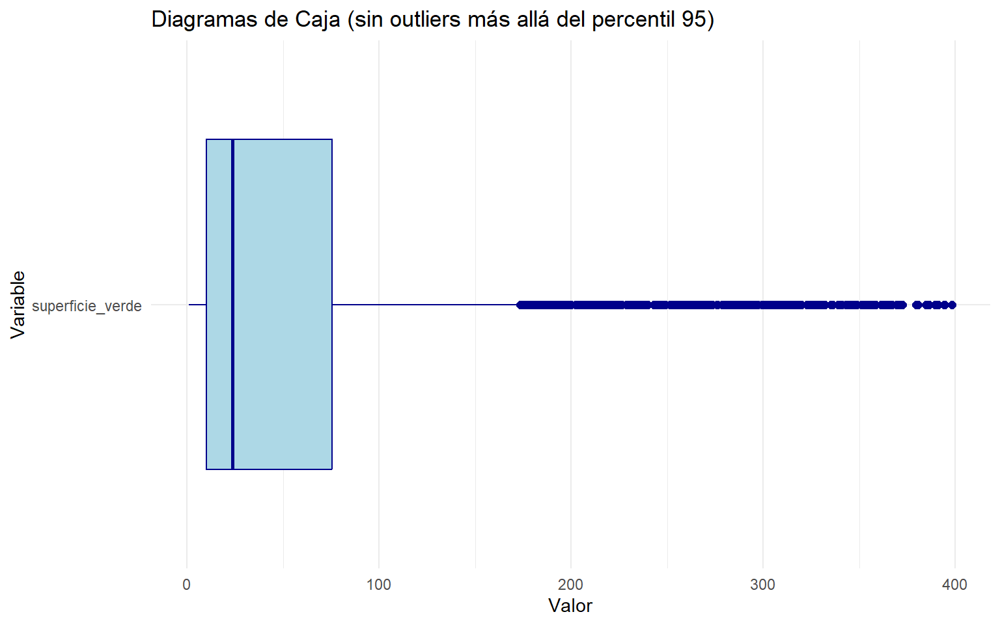
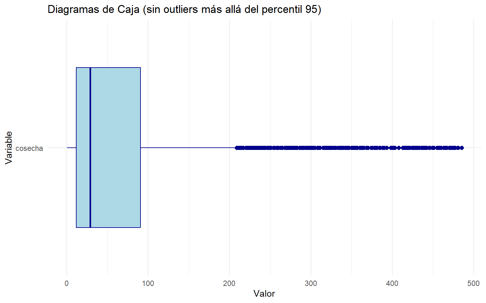
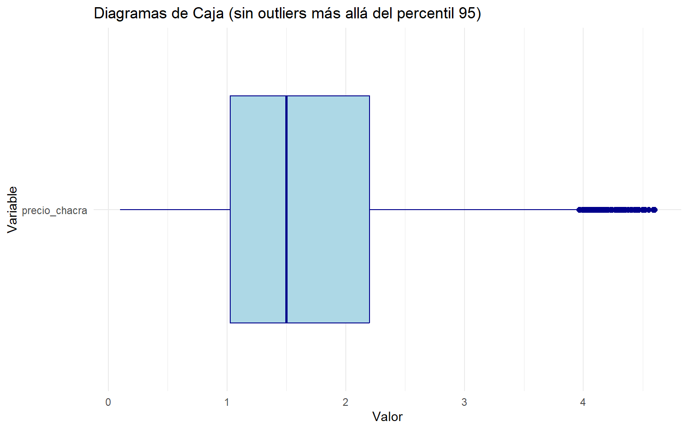
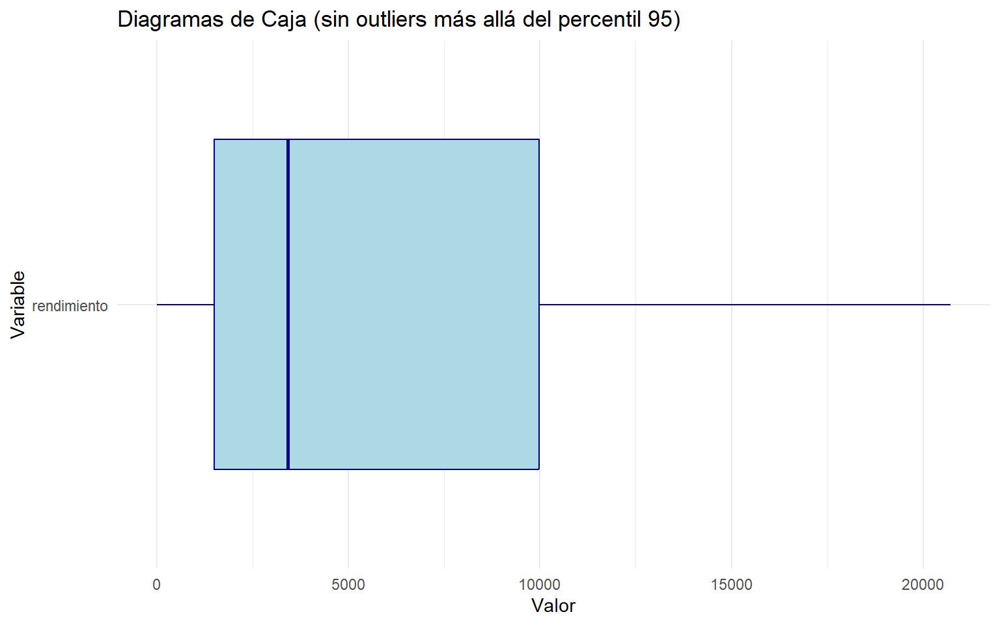

EDA _ Producción Cusco
## spc_tbl_ [3,901 × 14] (S3: spec_tbl_df/tbl_df/tbl/data.frame)
## $ departamento : chr [1:3901] "CUSCO" "CUSCO" "CUSCO" "CUSCO" ...
## $ provincia : chr [1:3901] "ANTA" "ANTA" "ANTA" "ANTA" ...
## $ distrito : chr [1:3901] "ANCAHUASI" "ANCAHUASI" "ANCAHUASI" "ANCAHUASI" ...
## $ ubigeo : num [1:3901] 80302 80302 80302 80302 80302 ...
## $ periodo_agricola: num [1:3901] 2020 2020 2020 2020 2020 2020 2020 2020 2020 2020 ...
## $ cultivo : chr [1:3901] "ALFALFA" "ARVEJA GRANO SECO" "ARVEJA GRANO VERDE" "AVENA GRANO" ...
## $ superficie_verde: num [1:3901] 190.47 20.7 29.64 85.22 8.12 ...
## $ siembra : num [1:3901] 147 23 40 98 35 205 26 78 320 19 ...
## $ cosecha : num [1:3901] 147 23 31 98 32 205 19 78 320 86 ...
## $ rendimiento : num [1:3901] 81973 2000 6000 2000 19875 ...
## $ produccion : num [1:3901] 12050 46 186 196 636 ...
## $ precio_chacra : num [1:3901] 0.19 2.5 1.79 1.745 0.182 ...
## $ valor_produccion: num [1:3901] 2290 115 333 342 116 ...
## $ fecha_corte : Date[1:3901], format: "2023-08-10" "2023-08-10" ...
## - attr(*, "spec")=
## .. cols(
## .. departamento = col_character(),
## .. provincia = col_character(),
## .. distrito = col_character(),
## .. ubigeo = col_double(),
## .. periodo_agricola = col_double(),
## .. cultivo = col_character(),
## .. superficie_verde = col_double(),
## .. siembra = col_double(),
## .. cosecha = col_double(),
## .. rendimiento = col_double(),
## .. produccion = col_double(),
## .. precio_chacra = col_double(),
## .. valor_produccion = col_double(),
## .. fecha_corte = col_date(format = "")
## .. )
## - attr(*, "problems")=<externalptr>| Name | produccion_cusco |
| Number of rows | 3901 |
| Number of columns | 14 |
| _______________________ | |
| Column type frequency: | |
| character | 4 |
| Date | 1 |
| numeric | 9 |
| ________________________ | |
| Group variables | None |
Variable type: character
| skim_variable | n_missing | complete_rate | min | max | empty | n_unique | whitespace |
|---|---|---|---|---|---|---|---|
| departamento | 0 | 1 | 5 | 5 | 0 | 1 | 0 |
| provincia | 0 | 1 | 4 | 13 | 0 | 13 | 0 |
| distrito | 0 | 1 | 4 | 14 | 0 | 106 | 0 |
| cultivo | 0 | 1 | 3 | 49 | 0 | 59 | 0 |
Variable type: Date
| skim_variable | n_missing | complete_rate | min | max | median | n_unique |
|---|---|---|---|---|---|---|
| fecha_corte | 0 | 1 | 2023-08-10 | 2023-08-10 | 2023-08-10 | 1 |
Variable type: numeric
| skim_variable | n_missing | complete_rate | mean | sd | p0 | p25 | p50 | p75 | p100 | hist |
|---|---|---|---|---|---|---|---|---|---|---|
| ubigeo | 0 | 1 | 80695.14 | 385.46 | 80101.00 | 80308.00 | 80701.00 | 81009.00 | 81307.00 | ▇▃▆▅▇ |
| periodo_agricola | 0 | 1 | 2018.99 | 0.81 | 2018.00 | 2018.00 | 2019.00 | 2020.00 | 2020.00 | ▇▁▇▁▇ |
| superficie_verde | 0 | 1 | 141.64 | 964.58 | 1.00 | 10.40 | 25.82 | 95.92 | 28680.18 | ▇▁▁▁▁ |
| siembra | 0 | 1 | 105.76 | 228.02 | 0.50 | 12.00 | 29.00 | 103.00 | 3835.00 | ▇▁▁▁▁ |
| cosecha | 0 | 1 | 159.82 | 956.15 | 0.50 | 13.00 | 31.00 | 115.00 | 28536.00 | ▇▁▁▁▁ |
| rendimiento | 0 | 1 | 8743.65 | 55132.82 | 0.00 | 1500.00 | 4000.00 | 12000.00 | 3360000.00 | ▇▁▁▁▁ |
| produccion | 0 | 1 | 847.56 | 3033.59 | 1.00 | 43.50 | 145.00 | 520.00 | 76700.00 | ▇▁▁▁▁ |
| precio_chacra | 0 | 1 | 1.98 | 1.84 | 0.10 | 1.07 | 1.55 | 2.50 | 82.80 | ▇▁▁▁▁ |
| valor_produccion | 0 | 1 | 1081.05 | 3678.07 | 1.65 | 76.80 | 216.00 | 674.20 | 99360.00 | ▇▁▁▁▁ |
# Calcular medias, medianas, desviaciones estándar
produccion_cusco %>%
select(superficie_verde, siembra, cosecha, rendimiento,
produccion, precio_chacra, valor_produccion) %>%
summary()## superficie_verde siembra cosecha rendimiento
## Min. : 1.00 Min. : 0.5 Min. : 0.5 Min. : 0
## 1st Qu.: 10.40 1st Qu.: 12.0 1st Qu.: 13.0 1st Qu.: 1500
## Median : 25.82 Median : 29.0 Median : 31.0 Median : 4000
## Mean : 141.64 Mean : 105.8 Mean : 159.8 Mean : 8744
## 3rd Qu.: 95.92 3rd Qu.: 103.0 3rd Qu.: 115.0 3rd Qu.: 12000
## Max. :28680.18 Max. :3835.0 Max. :28536.0 Max. :3360000
## produccion precio_chacra valor_produccion
## Min. : 1.0 Min. : 0.100 Min. : 1.65
## 1st Qu.: 43.5 1st Qu.: 1.067 1st Qu.: 76.80
## Median : 145.0 Median : 1.548 Median : 216.00
## Mean : 847.6 Mean : 1.983 Mean : 1081.05
## 3rd Qu.: 520.0 3rd Qu.: 2.500 3rd Qu.: 674.20
## Max. :76700.0 Max. :82.800 Max. :99360.00üìö Distribuci√≥n de variables
El análisis estadístico constituye una herramienta fundamental para interpretar datos y tomar decisiones informadas en diversos campos. En el área de Producción o Manufactura, permite estudiar patrones relacionados con edad de los operarios, experiencia, productividad, sueldos y desempeño, contribuyendo a una gestión más eficiente de los recursos humanos y materiales.
# Filtrar por percentil 95 (elimina extremos sin perder mucho info)
produccion_cusco %>%
select(superficie_verde, siembra, cosecha, rendimiento,
produccion, precio_chacra, valor_produccion) %>%
pivot_longer(cols = everything(), names_to = "Variable", values_to = "Valor") %>%
group_by(Variable) %>%
filter(Valor <= quantile(Valor, 0.90)) %>% # corte al 95%
ggplot(aes(x = Valor)) +
geom_histogram(bins = 50, fill = "steelblue", color = "white") +
facet_wrap(~ Variable, scales = "free", ncol = 3) +
theme_minimal() +
labs(title = "Histogramas sin outliers (percentil 95)",
x = "Valor", y = "Frecuencia")
ggplot(produccion_cusco, aes(x = superficie_verde)) +
geom_histogram(bins =20, fill = "steelblue", color = "white") +
labs(title = "Distribución de Superficie verde ", x = "Superfice_verde", y = "Frecuencia") +
theme_minimal()
# Histograma por variable
produccion_cusco %>%
select(superficie_verde, siembra, cosecha, rendimiento,
produccion, precio_chacra, valor_produccion) %>%
pivot_longer(cols = everything(), names_to = "Variable", values_to = "Valor") %>%
ggplot(aes(x = Valor)) +
geom_histogram(bins = 15, fill = "steelblue", color = "white") +
facet_wrap(~ Variable, scales = "free", ncol = 3) +
theme_minimal() +
labs(title = "Distribución de variables numéricas",
x = "Valor", y = "Frecuencia")
# Seleccionar variables numéricas
datos_numericos <- produccion_cusco %>%
select(superficie_verde, siembra, cosecha, rendimiento,
produccion, precio_chacra, valor_produccion)
# Calcular correlación
correlacion <- cor(datos_numericos, use = "complete.obs")
# Mostrar matriz
corrplot(correlacion, method = "color", type = "upper", tl.col = "black")

üéØ Objetivos
Objetivo General
Aplicar herramientas de estadística descriptiva e inferencial para analizar los datos del personal del área de producción de la empresa “Soluciones Globales S.A.C.”
Objetivos Específicos
- Describir las principales variables del personal de producción.
- Calcular medidas de tendencia central y dispersión.
- Aplicar pruebas de hipótesis para proporciones y medias.
- Estimar y analizar la regresión lineal simple.
- Interpretar gráficamente los resultados obtenidos.
üìù Conclusiones
El análisis descriptivo mostró que la mayoría de los empleados están en el área de Producción Industrial y en el rango de edad de 25 a 40 años, lo que podría estar relacionado con una etapa de alta productividad.
Referencias
Anderson, D. R., Sweeney, D. J., Williams, T. A., Camm, J. D., & Cochran, J. J. (2020). Estadística para los negocios y la economía (14.a ed.). Cengage Learning.
Montgomery, D. C. (2019). Introduction to Statistical Quality Control (8th ed.). Wiley.
Triola, M. F. (2022). Estadística. Pearson Educación.
Draper, N. R., & Smith, H. (1998). Applied Regression Analysis (3rd ed.). Wiley.
Levine, D. M., Stephan, D. F., Szabat, K. A., & Berenson, M. L. (2017). Estadística para administración (8.a ed.). Pearson Educación.